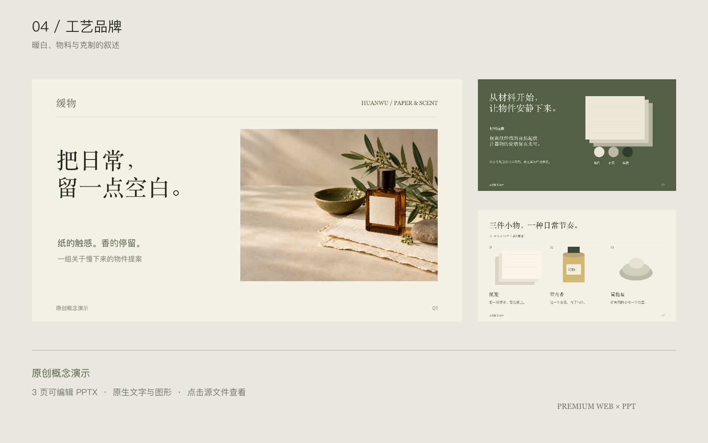
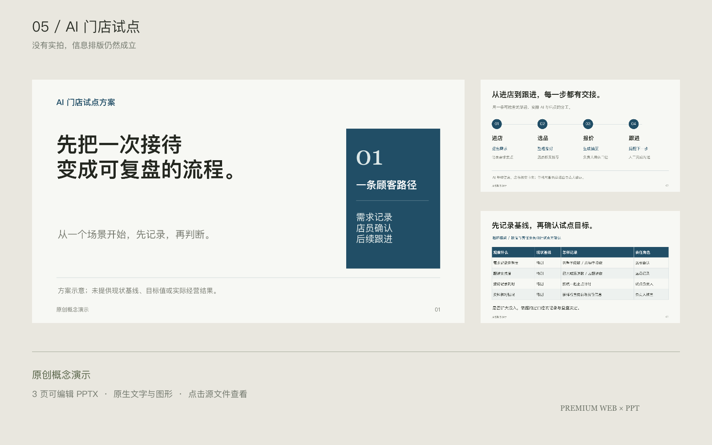
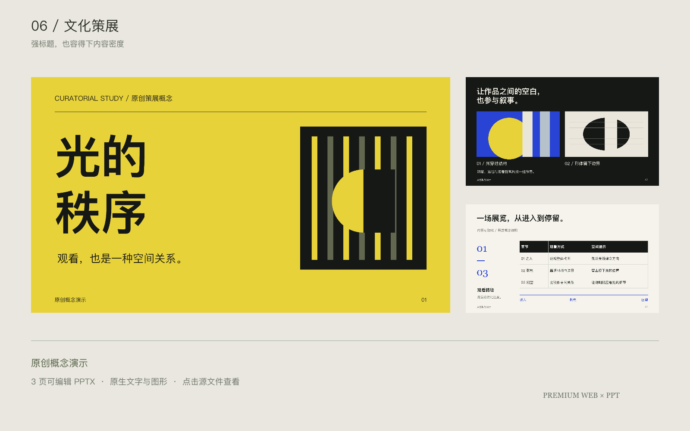

见山工作室
让建筑先被看见。大白边、竖幅图像与稳定图注，建立安静的观看顺序。
打开建筑官网从200个官网参考中，整理出构图、字体、留白与图像的选择方法。让网页与PPT，拥有适合内容的气质。
三个实际可浏览的网页。
点进案例，查看完整页面与手机重排。
三套PPT，每套3页。
标题、正文、流程与表格保留可编辑。

暖白、橄榄与原创静物，让封面、材料和系列页拥有同一条视觉线索。
下载工艺品牌 PPTX
没有实拍，也能排得清楚。判断标题、顾客路径与指标框架，层层展开。
下载商务方案 PPTX
从一张作品到一份目录，以网格、时间线和不同密度，安排观看与阅读。
下载文化策展 PPTX六组案例均为原创概念演示，不代表真实客户、已营业场所或商业实绩。建筑、音箱与工艺静物由GPT生成；网页与幻灯片实际排版并渲染。
按内容选择一个主方向，再决定字体、图像和比例。十种配方，让安静的画册与大胆的海报都能成立。
安装到Codex技能目录，再带上你的内容调用。基础使用依靠仓库内的配方、图集与分析，无需原始大文件。
查看完整介绍与200站参考 ↗git clone https://github.com/michalflowers245-alt/premium-web-ppt.git \
"${CODEX_HOME:-$HOME/.codex}/skills/premium-web-ppt"用 $premium-web-ppt，把这份内容做成高级、清楚的网页或PPT。 先看相关参考，自主选择方向，完成实际预览检查后交付。